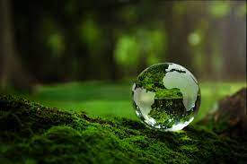

The natural environment or natural world encompasses all living and non-living things occurring naturally, meaning in this case not artificial. The term is most often applied to Earth or some parts of Earth. This environment encompasses the interaction of all living species, climate, weather and natural resources that affect human survival and economic activity.[1] The concept of the natural environment can be distinguished as components:
Complete ecological units that function as natural systems without massive civilized human intervention, including all vegetation, microorganisms, soil, rocks, the atmosphere, and natural phenomena that occur within their boundaries and their nature.
Universal natural resources and physical phenomena that lack clear-cut boundaries, such as air, water, and climate, as well as energy, radiation, electric charge, and magnetism, not originating from civilized human actions.
In contrast to the natural environment is the built environment. Built environments are where humans have fundamentally transformed landscapes such as urban settings and agricultural land conversion, the natural environment is greatly changed into a simplified human environment. Even acts which seem less extreme, such as building a mud hut or a photovoltaic system in the desert, the modified environment becomes an artificial one. Though many animals build things to provide a better environment for themselves, they are not human, hence beaver dams, and the works of mound-building termites, are thought of as natural.
People cannot find absolutely natural environments on Earth, and naturalness usually varies in a continuum, from 100% natural in one extreme to 0% natural in the other. The massive environmental changes of humanity in the Anthropocene have fundamentally effected all natural environments: including from climate change, biodiversity loss and pollution from plastic and other chemicals in the air and water. More precisely, we can consider the different aspects or components of an environment, and see that their degree of naturalness is not uniform.[2] If, for instance, in an agricultural field, the mineralogic composition and the structure of its soil are similar to those of an undisturbed forest soil, but the structure is quite different.